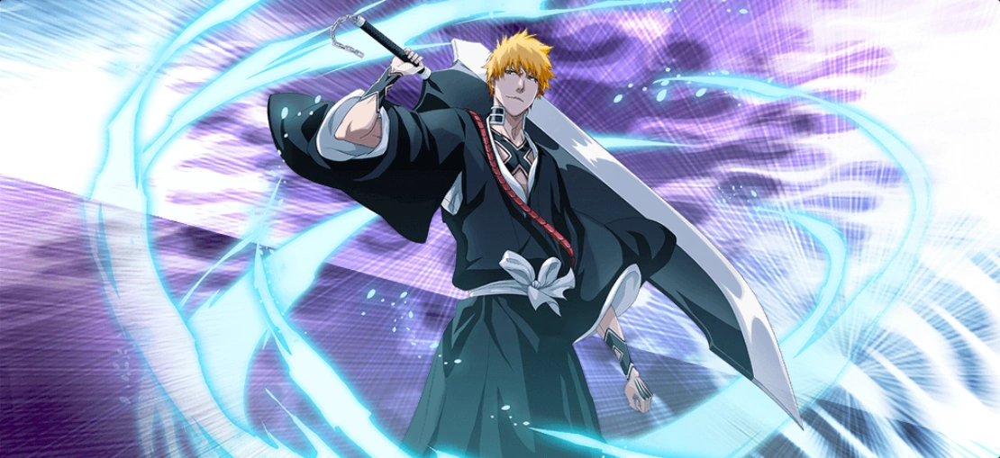

C'est en octobre 2022 que la nouvelle saison de l'animé Bleach sera diffusée. La date est pleine de sens : c'est 11 ans pile après le début de la diffusion de la saison 16, en 2011 ! La nouvelle saison de l'animé Bleach adaptera les derniers chapitres du manga, inédits sous ce format (plus de détails ci-dessous). Cette série d'animation japonaise a, pour rappel, été lancée en 2004 avec une première saison, avant d'enchaîner sa diffusion sur plus de 6 ans sans aucune pause de plus de 3 mois ! L'adaptation est pourtant très claire puisque chaque saison adapte un arc uniquement, bien que la version française ait su mélanger les choses à quelques reprises. En tout cas, c'est loin du bazar qu'est Jojo's Bizarre Adventure par exemple, où chaque saison est d'anthologie, unique dans son histoire !
Bienvenue sur le site consacré au manga Bleach
Bleach : nouvelle saison, le retour de l'animé a une date de sortie
L'arc final
L'arc du Fullbringer fait suite à la perte de pouvoir croissante d'Ichigo après le combat avec Aizen. Episode 343 à 366 Dans cet arc, Ichigo a grandit physiquement et intellectuellement. Il trouve une solution pour obtenir à nouveau ses pouvoirs de Shinigami sans aucune aide d'Aizen (effectivement, dans la discussion qui précède le combat Ichigo-Aizen, celui-ci parle de "manipuler" Ichigo tout au long de sa vie pour qu'il devienne un Shinigami). Au-delà de toutes espérances, Ichigo parvient à ranimer son pouvoir réel de shinigami, avec l'aide d'un pouvoir qui a la capacité d'absorber et de relâcher le pouvoir des Shinigami : le Fullbring. Il rencontrera donc les Fullbringers qui l'aideront à retrouver ses pouvoirs. Cet arc se déroulant un an et demi après la guerre contre Aizen, Ichigo semble avoir gagné en taille et en maturité depuis son dernier combat.
L'histoire de Bleach
L'histoire de Bleach se déroule dans une version alternative de notre monde où des shinigami, les faucheurs des âmes3, protègent l'espèce humaine et les âmes des morts des hollows, forme bestiale des âmes perdues. Cette lutte incessante, invisible aux yeux d'une très large majorité d'humains, se fait notamment à l'aide de Zanpakutō, des sabres spirituels liés à leurs maîtres qui peuvent se transformer. Cette réalité alternative est constituée de plusieurs mondes parallèles parmi lesquels, outre la Terre, se trouvent entre autres la Soul Society, le monde des shinigamis (alias le paradis), le Hueco Mundo, le monde des hollows (les âmes torturées) et l'Enfer (là où vont les mauvais esprits qui ont accompli des actes néfastes dans leur vie terrestre).